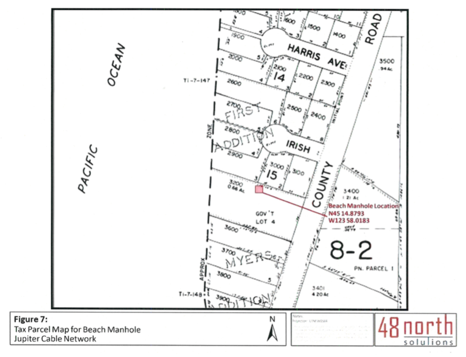
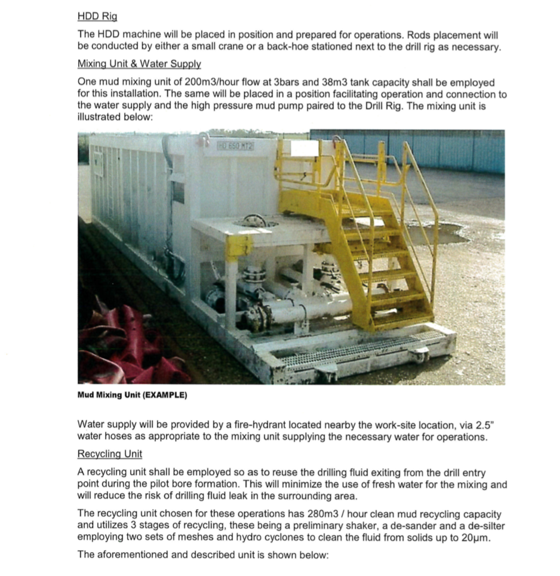
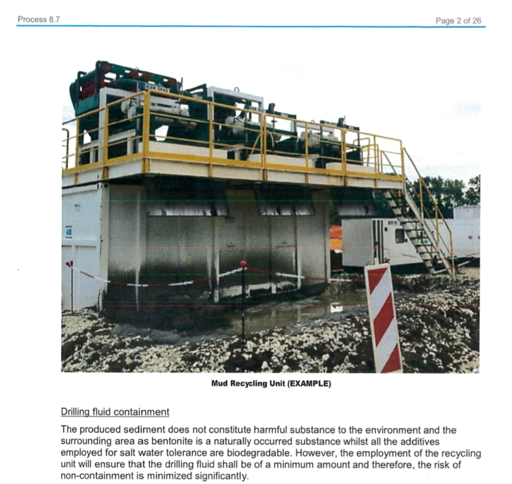
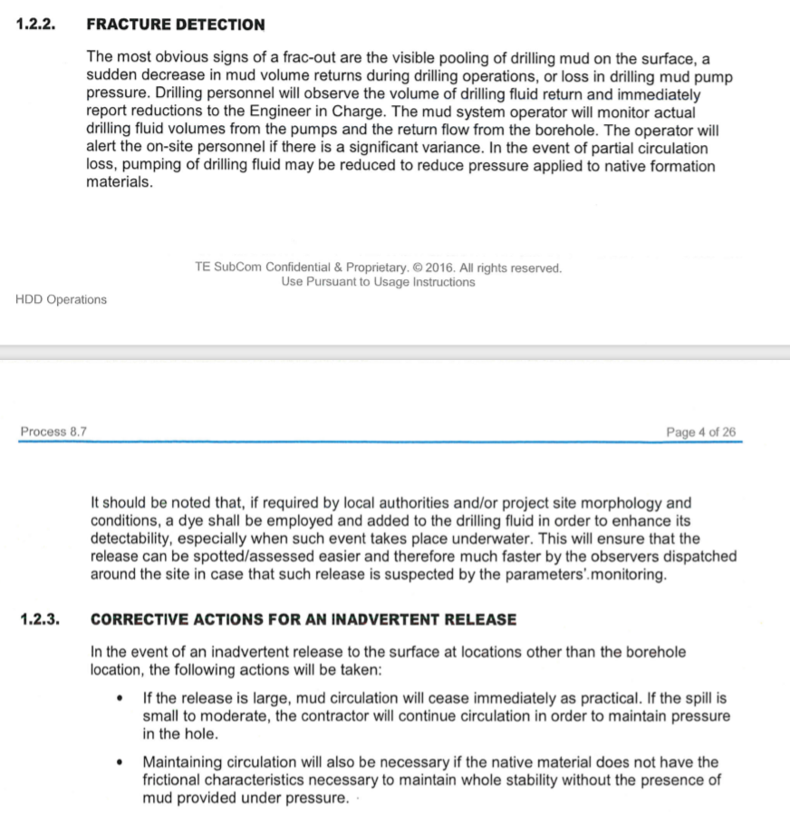
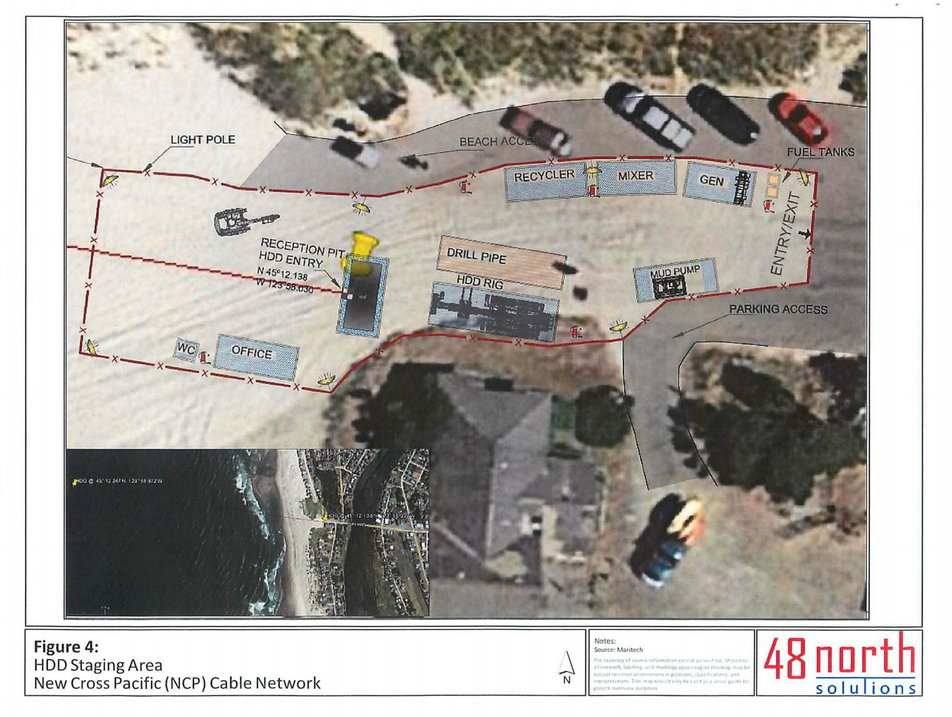

The process
Here are excerpts from the permit application showing what Facebook is planning for the site:    
Previous site
There is no site map included showing the range of equipment necessary for this operation. A previous project in Pacific City included this site map. Included for reference:
Sample Video
There are few videos online of such an operation in it's actual state, but here is a sample using slightly different machinery: